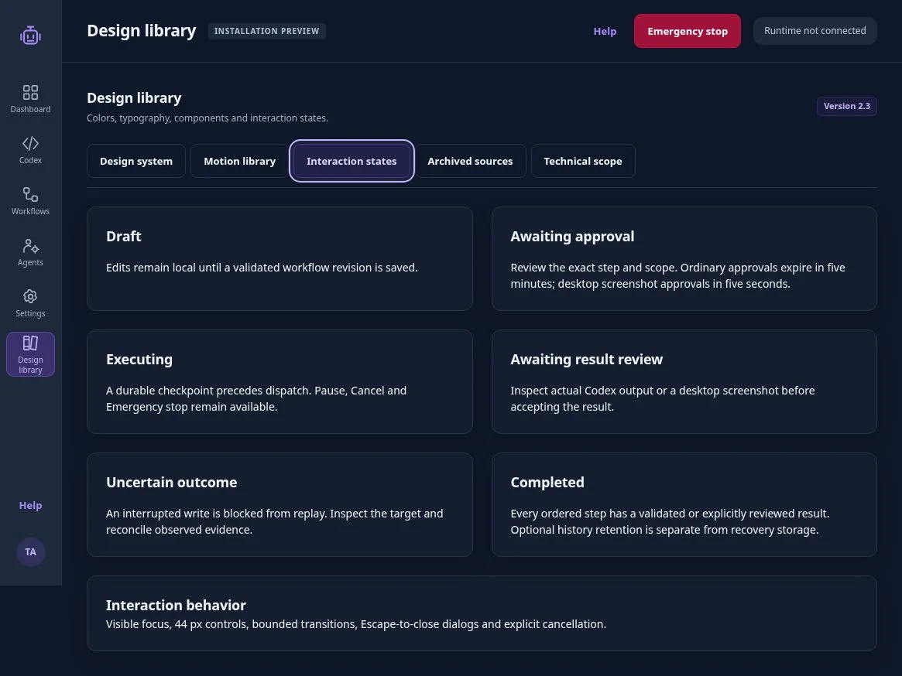
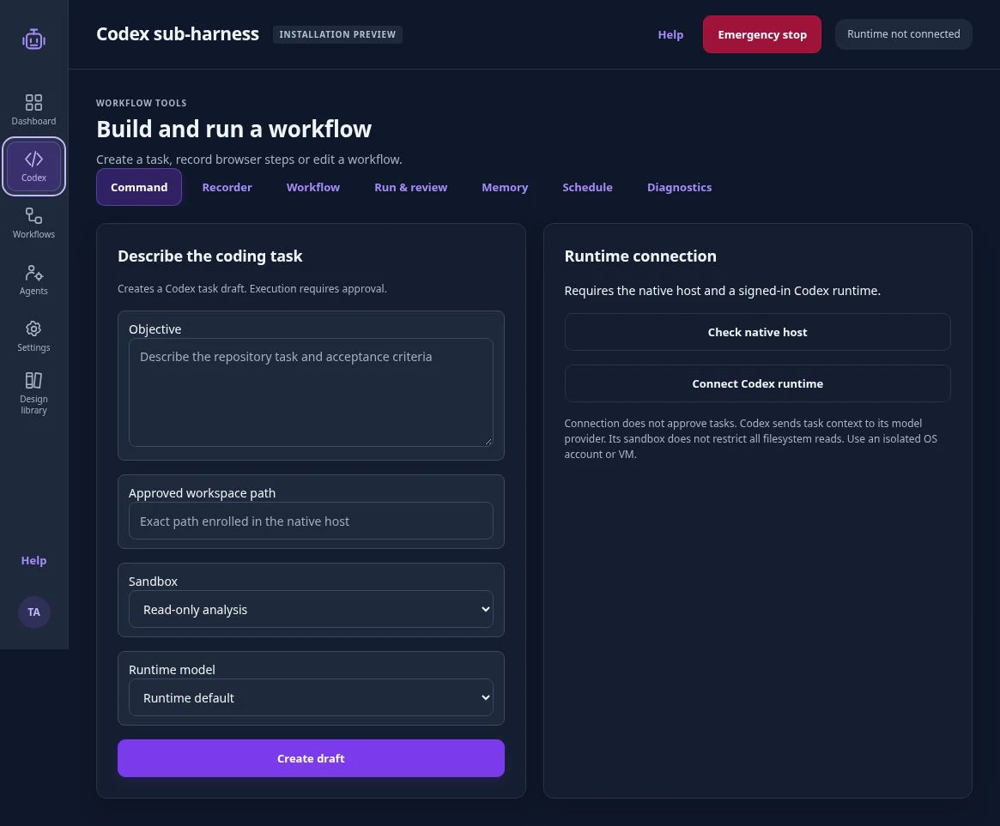
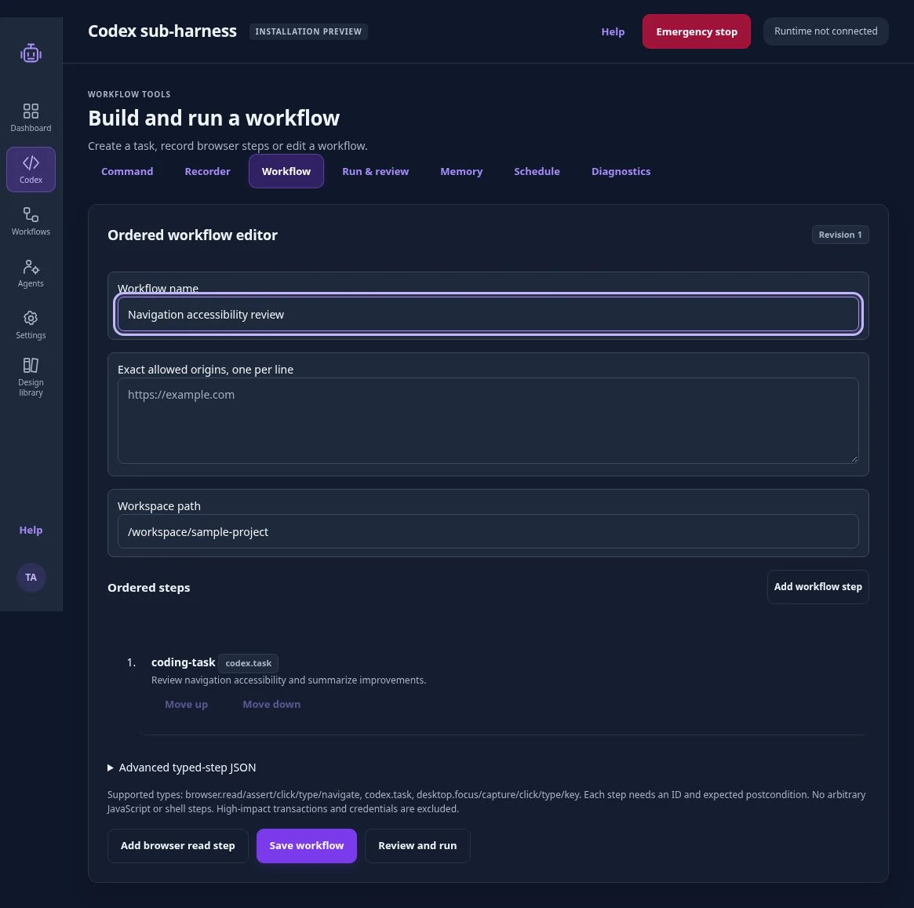
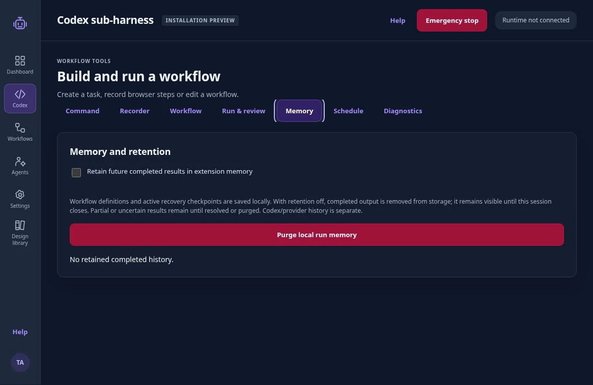
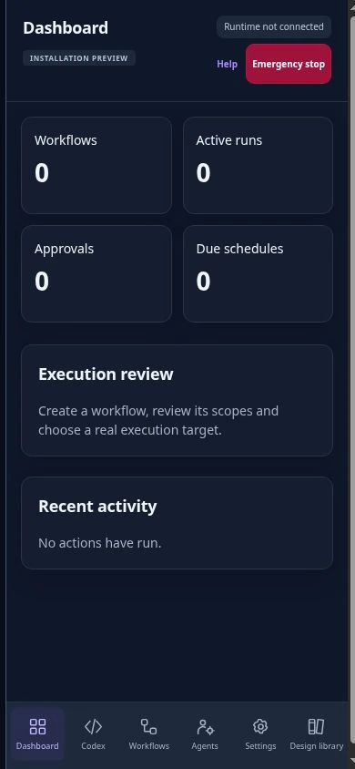
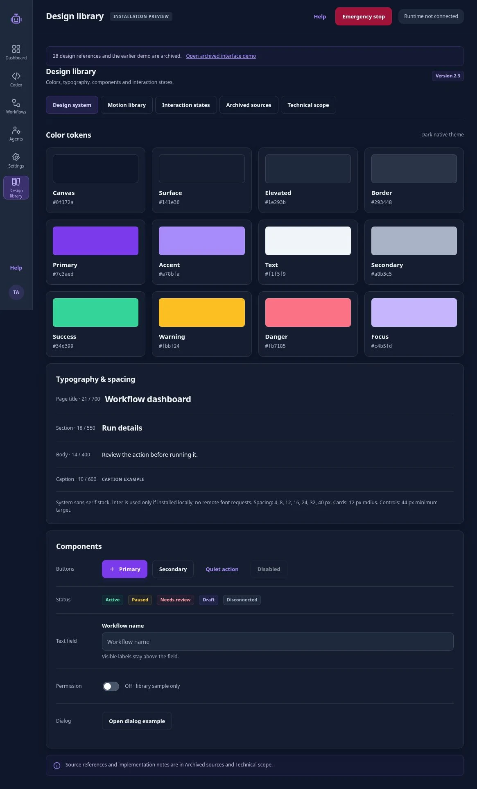
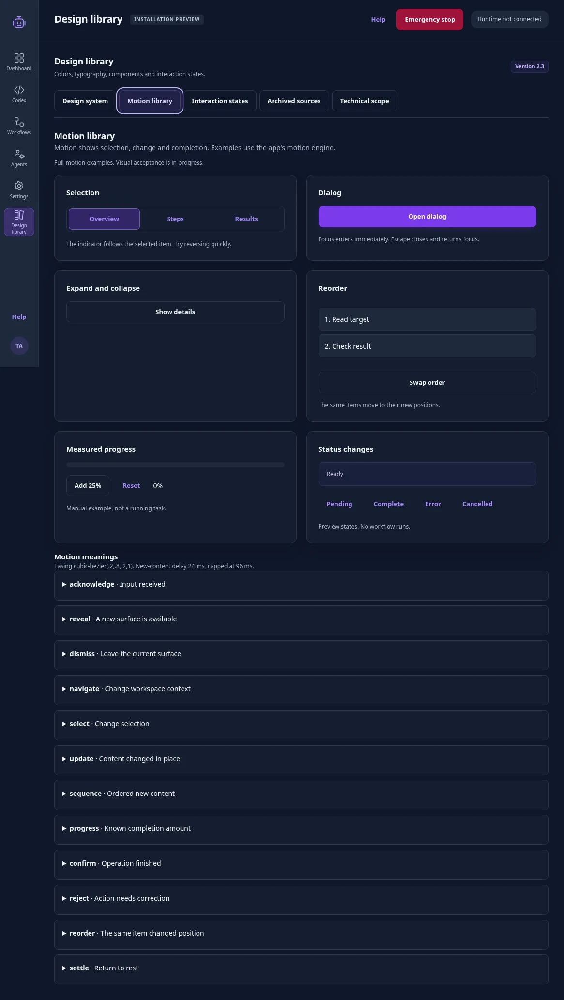

Separate the access decisions.
Browser origins, workspace access and native runtime connection each have a separate access boundary. The approval model above governs the action that follows.
03 / Taska / Independent project
For people delegating browser and coding work to an AI assistant. Taska makes the steps, access and stopping point reviewable before a run.
03 / Taska
Independent interaction design
Project dates and duration are not listed.
Permission to access a workspace does not approve every action inside it. Taska ties each one-time approval to a specific step and workflow revision. A changed draft needs a new decision.
I compared browser architectures and model choices in the research and product documents. Earlier designs are archived separately.
From research to an interaction rule
“An interrupted write is blocked from replay.”
Excerpt from the installation-preview state library. Inspect the source for the full rule.


The complete review cycle
Describe the task or record browser steps.
Check what each step will do.
Permit this step once.
Check what ran and what changed.
Save the workflow or set a schedule.
01 / The workflow
Each stage has a separate review or retention decision.
Taska’s coding-task editor, labeled “Codex sub-harness” in the application, lets users draft coding tasks and choose a workspace and sandbox before a run. Connecting the runtime is a separate step from approving work.
Users can also draft a workflow from recorded clicks and targets. The recorder leaves out typed values; users supply them during review.

02 / Control & memory
Browser origins, workspace access and native runtime connection each have a separate access boundary. The approval model above governs the action that follows.
The app stores recovery state before sending an action. That checkpoint supports the result check described in the research story.
My research distinguished page context, task state, session memory and an action log. The current implementation separates recovery storage from optional completed history. Recovery requires storing state before a task has finished.
Completed history is off by default. Users can turn it on or delete local records. Deleting local records does not remove copies held by Codex or the model provider. The sandbox limits writes and tool networking, not every filesystem read, so real work requires an appropriately isolated environment.

03 / Design system
Violet marks the primary action. Warning and error states use separate colors on the dark background.
Current UI checks cover representative interactions and measured CSS widths.


Selection markers move between options. Reordered steps keep their identity. Closing a dialog returns focus immediately; its visual exit finishes separately. Reversing an action continues from the displayed state.
Try the tabs, screenshot viewer and expandable sections below.
Try the patterns used on this portfolio: clear selection, readable state changes and a return to your place after image inspection.
The marker makes the current selection clear while reading content stays still. Keyboard focus updates immediately. Switch tabs again to reverse the movement.
Open the example, change the zoom, then close it to return here. Escape closes the viewer and returns focus.
Try image inspectionThis disclosure updates its content immediately. A brief summary cue and rotating indicator make the state change clear without clipping the reading surface.
Shared tokens: press 120 ms · feedback 180 ms · surface 260 ms · exit 160 ms · context 260 ms. Easing: cubic-bezier(.2,.8,.2,1).
